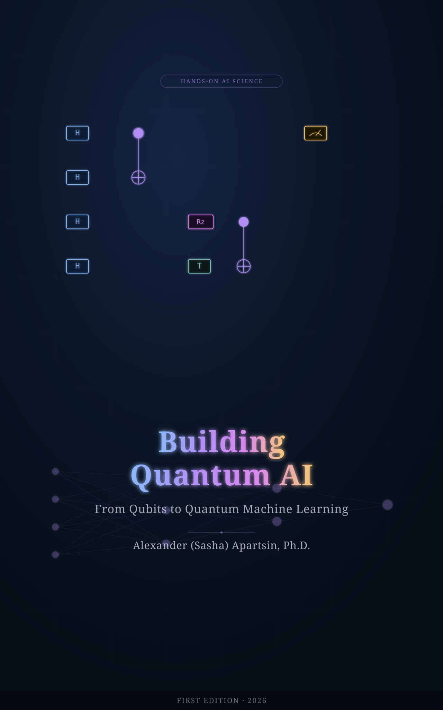

Deep theory, hands-on code, and an evaluation-first conscience: quantum computing, quantum machine learning, and quantum AI from first principles to the research frontier.
Quantum AI is not magic AI. It is machine learning built on a different computational substrate, and its advantage over classical computing is something to be demonstrated, not assumed. This book is one connected journey: from the mathematical rules of quantum computing through the algorithms, models, and engineering practice of quantum AI, with honest baselines, runnable code, and the real hardware and software stack at every step.
From the mathematical rules of the quantum game to production-grade quantum AI software, in one continuous build.
The rules of the game: qubits, measurement, gates, rotation gates, circuits, superposition, interference, entanglement, and the algorithms (Grover, QFT, HHL, VQE) that put them to work.
Ch 0-18 · 19 chapters IV-VA compact ML onramp for quantum readers, then the data-loading problem: why encoding classical data into quantum circuits is not free, what it costs, and what QRAM does and does not solve.
Ch 19-25 · 7 chapters VI-VIIQuantum kernels, variational circuits, QNNs, barren plateaus, expressivity, equivariant models, tensor networks, reservoir computing, generative models, reinforcement learning, QAOA, and QUBO.
Ch 26-42 · 17 chapters VIIIDensity matrices, simulators, noise channels, error mitigation versus correction, the 2026 hardware landscape (six modalities), fault-tolerance roadmaps, and a rigorous framework for evaluating advantage.
Ch 43-49 · 7 chapters IXQuantum data and learning separations, QNLP, quantum transformers, graph learning, scientific ML, neural quantum states, AI for quantum, and a survey of where quantum AI is actually applied.
Ch 50-57 · 8 chapters X-XIThe engineering spine: reproducible environments, AI-assisted coding, real-hardware access, GPU/JIT acceleration, benchmarking and statistics, and six capstone projects including a reproduce-a-paper lab.
Ch 58-69 · 12 chaptersSeven forms per concept, and an evaluation-first conscience that runs from Chapter 1 to the final capstone.
Plain English, intuition, analogy, diagram, equation, code, and the classical check: "could a classical computer do this?" No concept is left at the analogy stage.
Every listing is a runnable, version-pinned, tested notebook. Stage 1 builds from scratch in NumPy. Stage 2 uses PennyLane and Qiskit. Stage 3 adds honest classical baselines. Stage 4 is a full experiment.
Quantum AI is not magic AI. Every model meets a tuned classical baseline. Every advantage claim is held to dequantization, classical-surrogate, and benchmarking standards from the published literature.
Build-With-AI boxes show how to scaffold circuits, translate between SDKs, and debug with a copilot, followed immediately by the verification that keeps the code correct.
Every advanced chapter closes with the open questions at the research frontier. The most recent results (2024-2026) are integrated throughout, so the book stays current as you read.
Building Quantum AI is one of five connected books, each a deep, build-it-yourself guide to a major field of AI.
Hands-On AI Science is a series of in-depth guides to the major fields of artificial intelligence. Every book goes deep into the theory, models, and internals, covering the classical foundations and the most recent ideas, then shows you how to build each one in Python with the modern libraries and tools that get the job done. The writing stays plain and light (illustrations, analogies, mental models, worked examples, and a little fun) without trading away rigor or coverage. Each volume is self-contained and complete enough to anchor a full course on its subject.
From Qubits to Quantum Machine Learning.
You are hereRead the full About the Hands-On AI Science Series note.